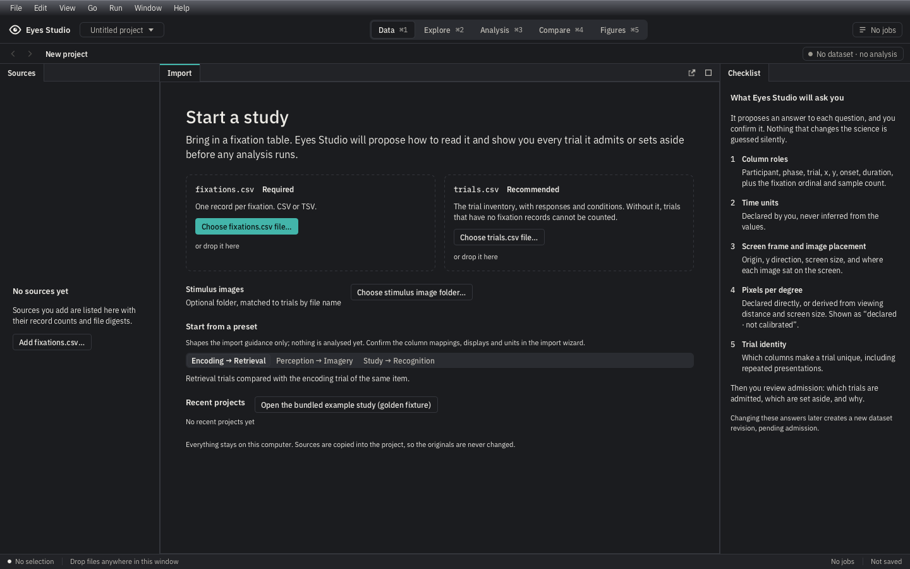

DataEmpty · bounded parity review
2026-10-21 · reviewer: codex-g4-session-20261021. Measured shell rows: 44 / 32 / 24; tabs: 28; sidebars: 252 / 300 logical pixels. Native scale 1; 2× files are snapshot transforms. Click an image for full size.
Recorded presentation differences
- The JavaFX menu row is 24 logical pixels; the board draws a 28-pixel macOS title bar. Native window chrome is outside the application content capture.
- The presets use the shared SegmentedBar with one Tab stop and selected description, instead of three illustrated radio cards. Preset choices guide the normal import wizard; units, geometry and admission still require confirmation.
- Recent projects show actual saved paths and an honest empty state. Preference storage contains no last-open timestamp, so the board’s illustrative ages are omitted. No projects are fabricated for the t0 capture.
- Decorative file/folder icons, numbered circles, required/recommended badge fills, and the checklist divider/re-admit pill are simplified to text. The same content and re-admission guidance remain visible.
- Import cards use existing shared import buttons, explicit file-kind labels, a 40-pixel horizontal inset and stacked drop guidance. The image-folder row is unboxed. These differ from the board’s compact card decoration.
- The board’s example focus ring is shown by actual keyboard focus, not drawn at rest. The preset group now has a CompositeFocus stop through the shared segmented control.
Required/recommended inputs, optional images, presets, independent bundled example, real Recent and local-only statement are functional. Ambiguous drops fail as a group. Units, geometry and trial admission remain explicit in the normal wizard. No physical Finder drag is claimed.
Native JavaFX · dark
Capture/source hashes and bounded review · Measured bounds. Final gate evidence is recorded separately; other boards remain separate obligations.